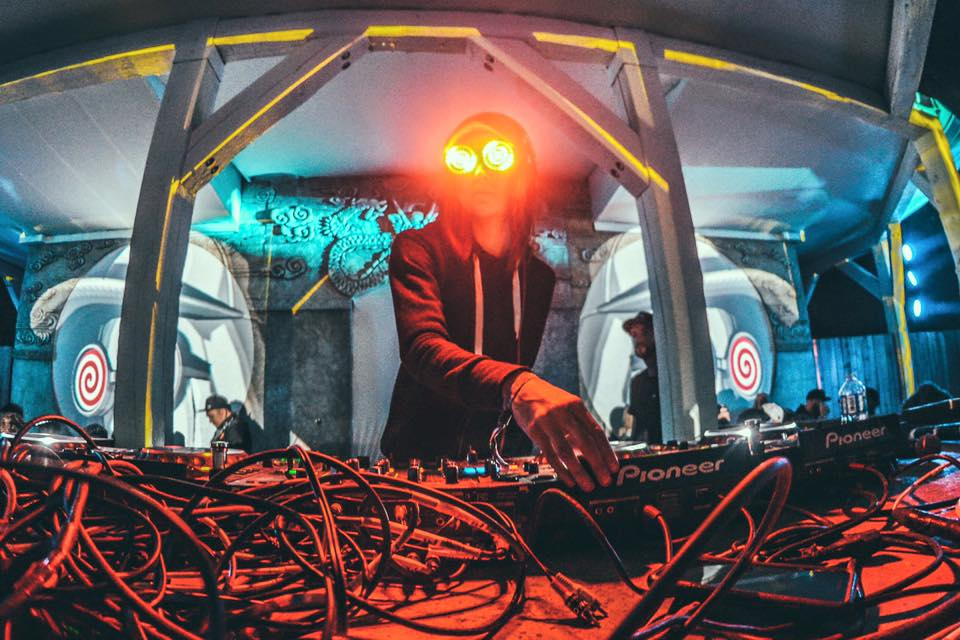

Dubstep is a genre of electronic dance music that originated in South London, England. It emerged in the late 1990s as a development within a lineage of related styles such as 2-step garage, dub, techno, drum and bass, broken beat, jungle, and reggae.[1][2] In the United Kingdom the origins of the genre can be traced back to the growth of the Jamaican sound system party scene in the early 1980s.[2][3] The music generally features sparse, syncopated drum and percussion patterns with bass lines that contain prominent sub bass frequencies.
Towards the end of the 2000s and into the early 2010s, the genre started to become more commercially successful in the UK, with more singles and remixes entering the music charts. Music journalists and critics also noticed a dubstep influence in several pop artists' work. Around this time, producers also began to fuse elements of the original dubstep sound with other influences, creating fusion genres including future garage, the slower and more experimental post-dubstep, and the harsher electro house and heavy metal influenced brostep, the latter of which greatly contributed to dubstep's rising mainstream popularity in the United States.
Hip hop as both a musical genre and a culture was formed during the 1970s when block parties became increasingly
popular in New York City, particularly among African-American youth residing in the Bronx. At block parties
DJs played percussive breaks of popular songs using two turntables and a DJ mixer to be able to play
breaks from two copies of the same record, alternating from one to the other and extending the "break".
Hip hop's early evolution occurred as sampling technology and drum machines became widely available and
affordable. Turntablist techniques such as scratching and beatmatching developed along with the breaks
and Jamaican toasting, a chanting vocal style, was used over the beats. Rapping developed as a vocal
style in which the artist speaks or chants along rhythmically with an instrumental or synthesized beat.
Notable artists at this time include DJ Kool Herc, Grandmaster Flash and The Furious Five, Fab Five Freddy,
Marley Marl, Afrika Bambaataa, Kool Moe Dee, Kurtis Blow, Doug E. Fresh, Whodini, Warp 9, The Fat Boys,
and Spoonie Gee. The Sugarhill Gang's 1979 song "Rapper's Delight" is widely regarded to be the first
hip hop record to gain widespread popularity in the mainstream.The 1980s marked the diversification of
hip hop as the genre developed more complex styles. Prior to the 1980s, hip hop music was largely confined
within the United States. However, during the 1980s, it began to spread to music scenes in dozens of
countries, many of which mixed hip hop with local styles to create new subgenres.
Learn more by clicking on this link!